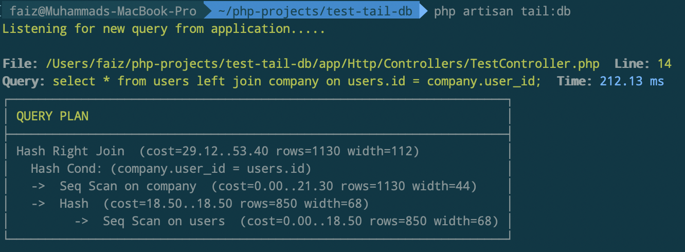
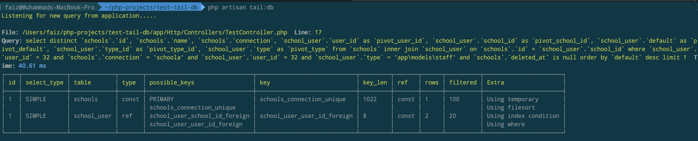

This package allow you to monitor realtime sql query executed in your application from the terminal.
When you run the command, it will listen to any SQL query executed and output the query data.
This package maybe useful if you want to detect slow query and optimize sql query. Instead you run
manually the explain command, this package automatically run it for you. From the explain result
you can check if the query missing and index and other things.
Below are the information you can get from the query data.
URL that trigger the SQL query.
File name including line number that trigger the SQL query in your application.
Raw SQL query executed including time taken for the query to complete.
Explain result.
Example output when running PostgreSQL:

Compatibility
List Of Database Supported
MySQL
PostgreSQL
Sqlite
Sql Server
Note
For SQL Server, you can't see the explain result since SQL Server don't have the explain command.
Requirements
PHP: ^7.0
Laravel: ~5.5, ~5.6, ~5.7, ~5.8, ~6.0, ~7.0, ~8.0
Installation
Require this package in the composer.json of your Laravel project. This will download the package
composer require muhdfaiz/laravel-tail-db
The Muhdfaiz\LaravelTailDb\TailDatabaseServiceProvider is auto-discovered and registered by default.
Next, you need to publish the Laravel Tail DB configuration file:
This is the default content of the config file that will be published as config/tail-db.php:
return [
/*
|--------------------------------------------------------------------------
| Status
|--------------------------------------------------------------------------
|
| This option used to enable or disable the Laravel Tail DB watcher.
| If enabled, every sql query executed from the application will
| be captured and store the query in the log file if you enabled the
| query option.
|
*/
'enabled' => env('TAIL_DB_ENABLED', true),
/*
|--------------------------------------------------------------------------
| Host
|--------------------------------------------------------------------------
|
| Laravel Tail DB use ReactPHP to monitor the SQL query. When you run
| 'tail:db' command, it will start the ReactPHP Server. ReactPHP Server
| will use this host when starting the server.
|
*/
'host' => env('TAIL_DB_HOST', '0.0.0.0'),
/*
|--------------------------------------------------------------------------
| Port
|--------------------------------------------------------------------------
|
| Laravel Tail DB use ReactPHP to monitor the SQL query. When you run
| 'tail:db' command, it will start the ReactPHP Server. ReactPHP Server
| will use this port when starting the server.
*/
'port' => env('TAIL_DB_PORT', '9001'),
/*
|--------------------------------------------------------------------------
| Duration of time to considered as slow query.
|--------------------------------------------------------------------------
|
| This option used to tell Laravel Tail DB if the query slow or not.
| For example, if you specify 2000ms and the last query executed take
| more than 2000ms, Laravel Tail DB will highlight the time with red color.
| If the query below than 2000ms Laravel Tail DB will highlight with green color.
| The value must be in milliseconds.
*/
'slow_duration' => env('TAIL_DB_SLOW_DURATION', 3000),
/*
|--------------------------------------------------------------------------
| Ignore queries
|--------------------------------------------------------------------------
|
| You can specify the keyword to skip the tailing.
| Laravel Tail DB will check if the query contain those keyword or not.
| If exist, Laravel Tail DB will skip recording to log file.
| The key keyword must be separated by comma.
| Example: alter table}drop table. (Separated by |)
|
*/
'ignore_query_keyword' => env('TAIL_DB_IGNORE_QUERY_KEYWORD', ''),
/*
|--------------------------------------------------------------------------
| Log Query
|--------------------------------------------------------------------------
|
| Option to specify if you want to store the SQL query in the log file.
|
*/
'log_query' => env('TAIL_DB_LOG_QUERY', false),
/*
|--------------------------------------------------------------------------
| Filename to store mysql queries log
|--------------------------------------------------------------------------
|
| Default filename is database.log
|
*/
'filename' => env('TAIL_DB_FILENAME', 'database.log'),
/*
|--------------------------------------------------------------------------
| Path to store sql queries log.
|--------------------------------------------------------------------------
|
| Default path is inside storage/logs.
|
*/
'path' => env('TAIL_DB_PATH', storage_path('logs')),
/*
|--------------------------------------------------------------------------
| Show explain sql during the tail.
|--------------------------------------------------------------------------
|
| By default every sql query executed, laravel tail db will run explain
| command. Useful if you want to troubleshooting performance issue.
| If turn off, Laravel Tail DB only show the query executed, the time and
| the location where the query executed.
*/
'show_explain' => env('TAIL_DB_SHOW_EXPLAIN', true),
];
Changelog
All the change are documented in Github. You can view Github
Usage
Run the command below to start listening for the SQL query.
php artisan tail:db
Note
By default, Laravel Tail DB will not captured query related to migration like create table, update table, alter table and others.
How It Works
When you installed Laravel Tail DB, the service provider will registered the event to captured SQL query executed from your application.
Any of the SQL query captured by Laravel Tail DB will be sent to ReactPHP Server.
When you run the tail:db command, the ReactPHP Server also started and ready to receive any sql query data captured.
When received new SQL query data, it will output to console.
Result
For the output of the duration to complete the query, got 2 colors
Blue - Indicate the query not slow
Red - Indicate the query slow
You can update the slow_duration config to false which you think suitable with your preferences.
You also can disable the explain query if you want to show it. You can update the show_explain config to false
Sample MySQL Output

Sample PostgreSQL Output
Sample SQLite Output
FAQ
How to disable the Laravel Tail DB?
You can update the enabled config to false
How to set custom duration of SQL query that considered slow? For example, I want query more than 1 seconds consider as slow query.
You can update the slow_duration config. The value must be in milliseconds
How to ignore some query? For example, I don't want to Laravel Tail DB listen the telescope query.
You can update the ignore_query_keyword config. Laravel Tail DB will check if the query contain any of these keywords. If true, Laravel Tail DB will ignore it.
If you want to specify multiple keyword, please separated the keyword by |
What if I only want to see the raw SQL query executed and want to hide the explain result
You can update the show_explain config to false
What if I want to store the query in the log file?
You can update the log_query config to true. If you set to true
How to change the path and file name that will be used to store the data.
You can update the path config and filename config